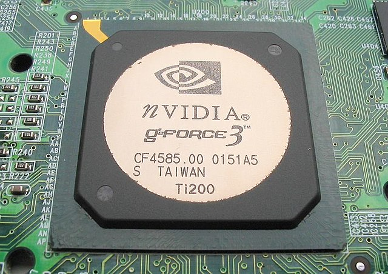
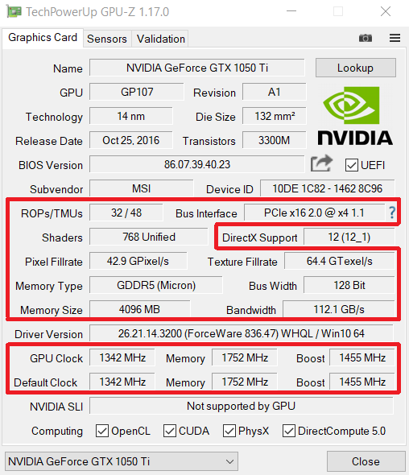

GPU (Graphics Processing Unit)
Historia das GPUs
Desde o inicio do uso de computadores pessoais as placas de vídeo eram necessárias,
sendo que no começo todo o processo era garantido pela CPU. Nãoexistiam imagens em
3 dimensões, e possuíam pouca coloração, as imagens eram
criadas pela CPU e a Placa de Vídeo apenas repassavam os dados da imagem
e passava-os para o frame, estas placas dependiam 100% do restante sistema e
comunicavam com a placa-mãe através da interfarce ISA, projetada para a
época rodando em paralelo com clocks e tendo uma taxa de transferência muito baixa

GPU nVidia GeForce 3
Com o surgimento das imagens 2D as placas já utilizavam interface PCI,
tendo clock e taxa de transferência mais altos. Continham circuitos mais com-
pletos e complexos para processar as imagens passaram a depender menos do
CPU, sendo possível utilizar uma interface gráfica mais sofisticada com design
das janelas, renderização de textos sendo possível também a decodificação de
imagens e vídeo em alguns formatos.
Com a vinda das imagens 3D com mais complexidade e com a necessidade
de uma GPU mais capacitada surgiu a interface AGP, esta tinha uma taxa
de transferência mais elevada do que os antigos PCI já ultrapassados. Esta
interface tinha varias versões e por bastante tempo foram exclusivas para placas
de video.
como já vínhamos num ciclo novamente com a evolução da qualidade das
imagens, dos jogos e softwares, a interface AGP já estava ultrapassada, a
solução foi eliminar barramentos paralelos, e introduzir uma conexão "point to
point" com clocks e tavas de transferência muito altas, surgem assim os PCI
Express. Atualmente estamos na versão 4.0 desta interface, que tornou-se
rapidamente o padrão na industria.
Por volta dos anos 2000, as placas-mãe começaram a conter os chamados
GPU onboard que apesar de suportarem aplicações 3D não tinham capacidade
para rodar jogos e aplicações pesadas. Apos alguns anos surgem no mercado
as Accelerated Processor Unit (APU) criados pela AMD, estes chips eram uma
CPU com uma GPU intefarre o que trazia bom desempenho, mas não dispensava
o uso de placa de vídeo para obter maior desempenho e qualidade.
Atualmente os processadores Core da Intel trazem um adaptador gráfico,
mas devido ao seu desempenho baixo, são apenas utilizado sem apoio da placa
gráfica quando o computador apenas desempenha funções de escritório, sendo
que para utilizar softwares mais pesados e poder rodar jogos é necessário o usa
de uma placa de vido conectada ao slot PCI Express.

1050 Ti em detalhes no App GPU-Z.
Desempenho
O desempenho da GPU depende de Vários fatores.
- ROPs/TMUs
- Shaders
- Pixel Fillrate
- Texture Fillrate
- Bus Interface
- Bus width
- Memory Type
- Memory Size
- Bandwidth
- GPU Clock
- Default Clock
Clock
Clock é um chip que vai defenir o ritmo de processamento e a sincronização entre
circuitos, as placas de vídeo possuem um cristal clock que cria um frequência
em Mhz. Este sinal é enviado para o chip através de um circuito chamado
Phase Locked Loop (PLL), é gerado um sinal com algus Mhz e é utilizado para
gerar a frequência para cada parte do circuito, sendo que cada uma trabalha
em um ritmo diferente. As GPUs atuais possuem sistemas de gerenciamento
de energia, sendo normal estarem a trabalhar a uma frequência inferior a sua
capacidade, estas também tem um modo Boost que aumenta a frequência do
clock (Overclock) utilizado por exemplo quando a demanda de processamento
é elevada em jogos.
Shaders
ão códigos que foram incluídos no final dos anos 90 para geram efeitos diversos
nas imagens em jogos. As placas anteriores á implementação desta tecnologia
não tem capacidade para rodar jogos, estes shaders são processados em circuitos
específicos, existem vários tipos de shader.
Vertex Shader Utilizado em jogos e aplicações quando á a necessidade de
mover polígonos e mudar a forma de objetos, aplicar detalhes, coisas que não
seriam bem feitas utilizando apenas texturas ou seriam demasiado complexas
para serem trabalhadas individualmente.
Pixel Shader Utilizado na etapa de renderização de imagens sendo utilizado
na criação real de cenários através de uma Setup Engine, repleto de polígonos
é enviado para uma fragmentação que server para distribuir o quando ao ser
processado. Em jogos são utilizados na estrutura de objetos, sombras, efeitos
de luz, cores, entre outros.
Geometry Shader Outro tipo de conjunto de instruções de shader, direcio-
nado á criação de grupos de vértices, processados pelas shader units, permitindo
ao desenvolvedor criar um cenário com muitos objetos sem sobrecarregar a CPU.
TMU
Sigla para (Texture Mapping Unit) em português "Unidade de Processamento de
Texturas" trabalham conjuntamente com as Shader Units sendo responsáveis por
aplicar textura nas imagens, sendo bastante mais simples que os Shader Units,
podem ficar limitadas quando ativados filtros de textura. Isto pode agravar-se
caso a comunicação com a memoria tenha baixa taxa de transferência.
ROP
ROP "Raster Operation Units" em português (Unidade de Operação Raster),
apos uma imagem ser processada essa fica arquivada em unidades ROPs que
aplicam outros filtros á imagem. Os circuitos mais antigos eram constituídos
pela mesma quantidade de TMUs e ROPs enquanto os atuais contem quan-
tidades diferentes para obter um balanço na distribuição de recursos internos.
Controlador de memoria RAM
controlo de memoria RAM serve para fazer a gestão das informações enviadas
e recebidas através da RAM. Dentro deste á circuitos que enviam comandos de
leitura, escrita, acesso a dados, etc.
Interface
Como já vimos existem vários tipos de interfaces, e a taxa de transferência é
um fator diretamente ligado á capacidade de processamento, permitindo que a
transferência de dados seja feita em maior frequência.